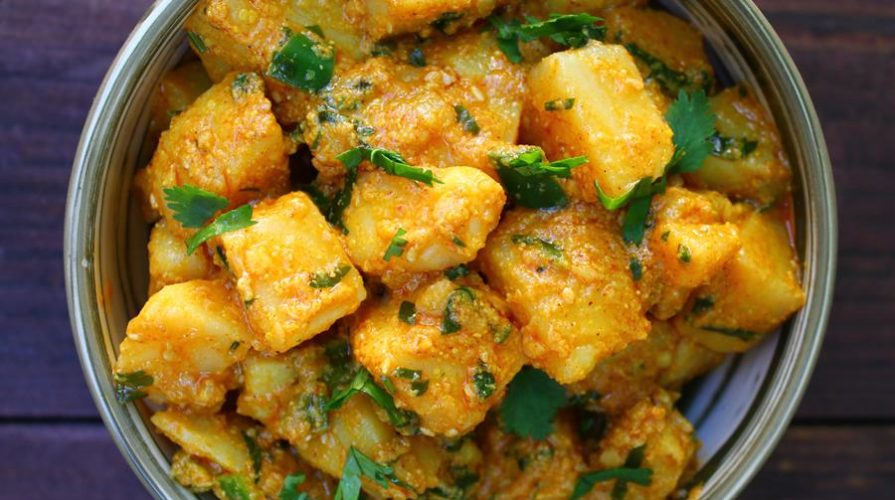

AALOO KO ACHAR

Aaloo ko achar
Aloo ko achar is a popular Instant pickle from Nepali cuisine. Potatoes and peas tossed in mustard oil and
fenugreek tadka is an Nepali Recipe of Potato curry.
An easy and simple Nepalese recipe. This instant potato
pickle or achar served as a side dish in Bhoj that is a ceremonial feast. This is also known as
Nepali Aloo
Sabzi or Aloo sadeko.
Ingredients
- 1.5 teaspoon Coriander seeds
- 1 teaspoon cumin seeds
- 1.5 tablespoon ginger
- 300 grams potatoes boiled
- 75 grams green peas boiled
- 2 green chillies chopped
- 1 teaspoon sesame safed til powder
- 1 teaspoon yellow mustard powder
- Salt to taste
- 1 teaspoon red chilli powder
- 4 tablespoons mustard oil
- ½ teaspoon fenugreek seeds methi
- ½ teaspoon haldi powder
- 1 lime
Steps
- Coarsely grind coriander seeds, cumin seeds and ginger in a mortar and pestle. Keep it aside.
- Cut the boiled potatoes into cubes and put them in a shallow dish, add in the green peas.
- Sprinkle the sesame seed powder and yellow mustard powder in the potato.
- Add chopped green chillies, salt, red chilli powder, and the coarsely ground spices (coriander, cumin, and
ginger)from the mortar to the potatoes.
- Take a pan and heat about 4 tablespoons of mustard oil till it starts to smoke a little. Cooking or heating
the mustard oil will remove the pungent raw taste it has.
- Switch off the heat and add ½ teaspoon fenugreek seeds and ½ teaspoon turmeric powder to the oil.
- Pour this hot oil tempering over the bowl of potatoes and spices and mix thoroughly tossing the seasoning
(tadka) with the potatoes.
- Squeeze a lemon and toss it again.
- Serve it with paratha and chai.
Go Back